Midnight Commander
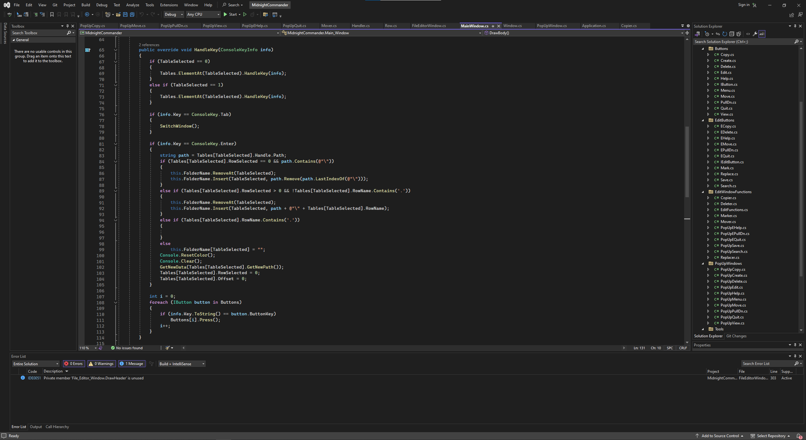
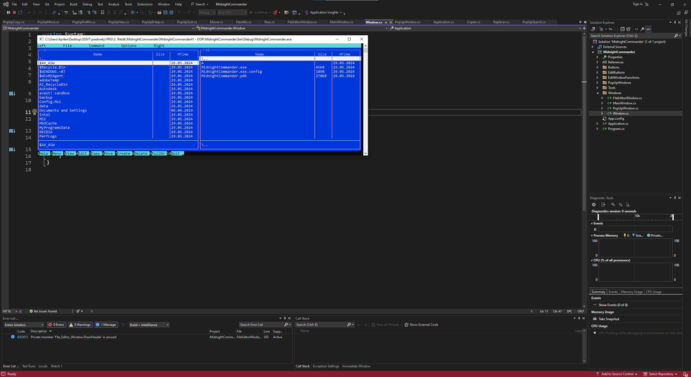
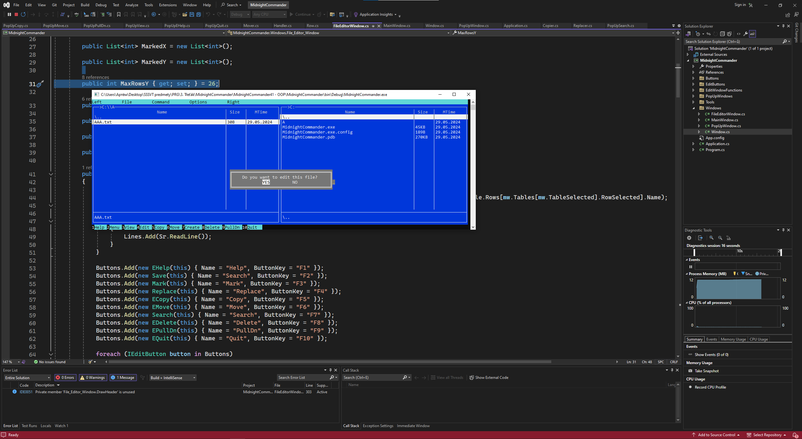
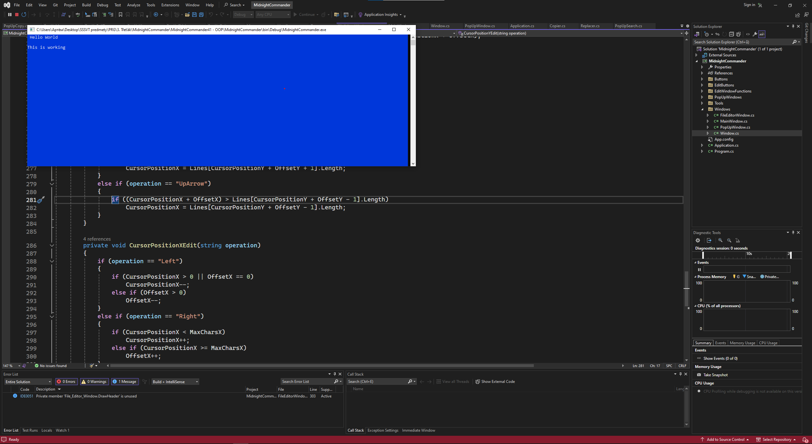
Toto byl náš první velký projekt. Jeho účelem bylo naučit se OOP.
Za úkol jsme měli vytvořit známý souborový prohlížeč Midnight
commander. Jeho interface vykresloval do příkazové řádky. Každá
součást byla reprezentována znakem.
Logika programu byla taková: byl objekt Application, který v sobě
uchovával objekt dědící ze třídy Window, což reprezentovalo GUI.
Objekt Window měl vlastní metody pro vykreslení a zaregistrování
zmáčknutých kláves. Dále každý Windows mělo vlastní list tlačítek
(neboli Hotkeys), pro manipulaci se soubory/daty. Na každém
tlačítku byl event, který v závislosti na jeho funkci prováděl
vlastní metodu. Všechna tlačítka dědila z interface společnou
metodu, kterou následně přepisovaly. Ne všechna tlačítka byla
funkční, ale jenom ty nejdůležitější. Například fungovaly tlačítka
pro přesun, kopírování, mazání a vytvoření souboru.
Nejtěžší částí celého projektu bylo implementovat prostředí pro
práci s textovými soubory. To také dědilo ze třídy Window a mělo
vlastní metody pro práci v něm. Měly v něm být zahrnuty takové
metody jako přesunutí textu, zkopírování textu, označení textu,
uložení souboru a zavření souboru. Všechny funkce se mi
implementovat nepodařilo a v programu vznikaly chyby, při
nesprávném ovládání (např. Když kurzor vyjede mimo text –
IndexOutOfRangeException). Myslím si, že dnes bych tyto chyby
dokázal opravit, ale nevidím to jako potřebné, jelikož OOP jsem se
do určité míry dost dobře naučil.
Na celý projekt jsme měli měsíc a půl. Každý týden jsme měli
checkpointy (deadliny), kde nám pan profesor řekl, co po nás bude
chtít implementovat na příští týden, a dal nám známku za práci
během uplynulého týdne. Na tomto projektu jsem strávil kolem 150
hodin a spolupracoval jsem společně se spolužáky (např. Eventy
jsme nikdy neviděli a museli jsme se radit s pár lidmi, kteří to
pochopili z hodiny). Tento projekt nám ale dal dobré zázemí pro
pochopení, jak by měla správně vypadat struktura v programu a jak
naplno využít OOP.
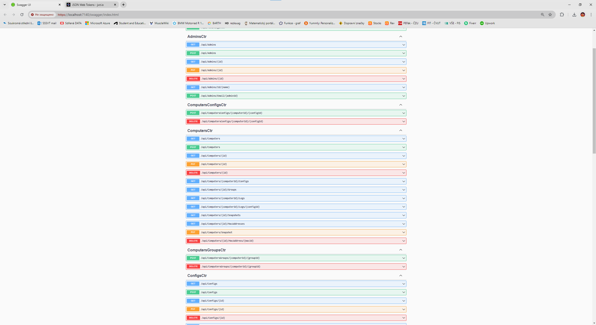
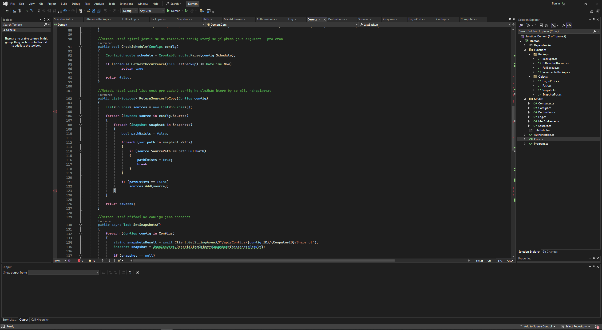
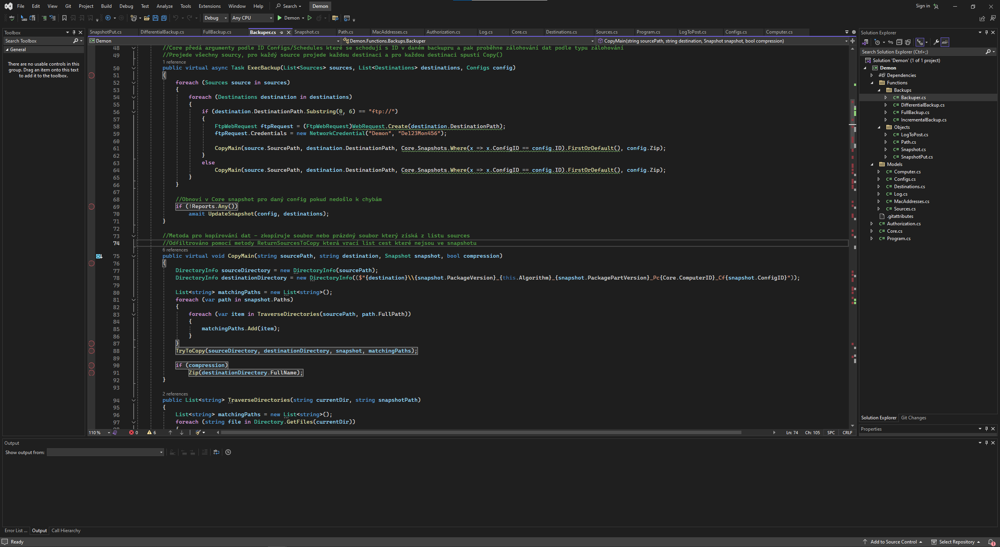
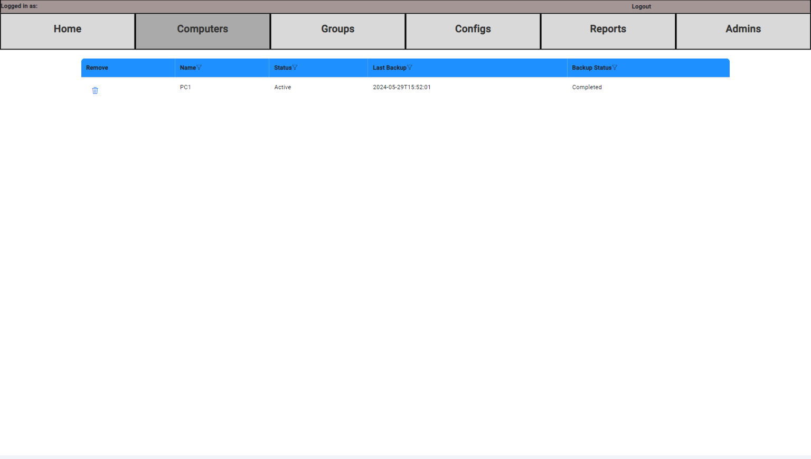
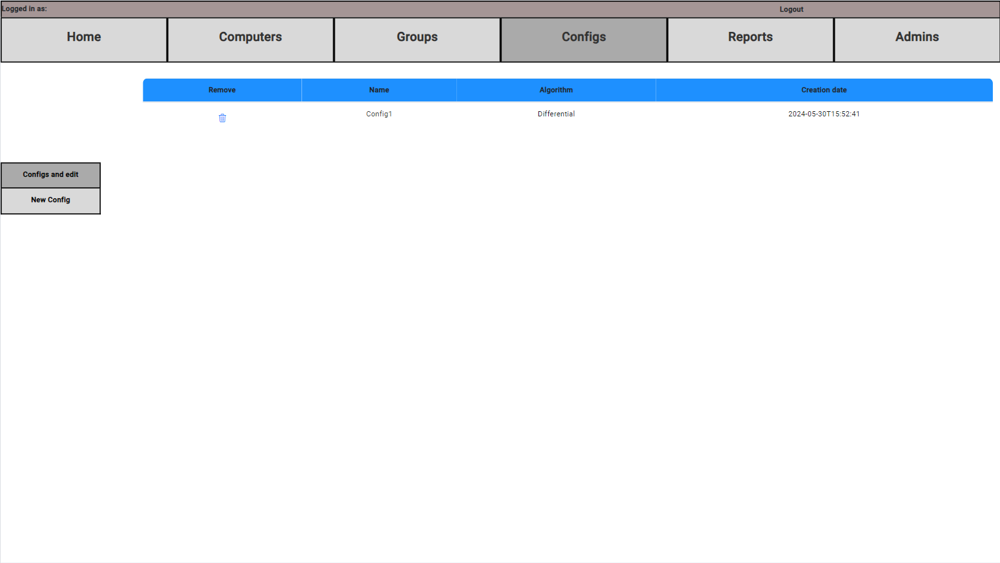
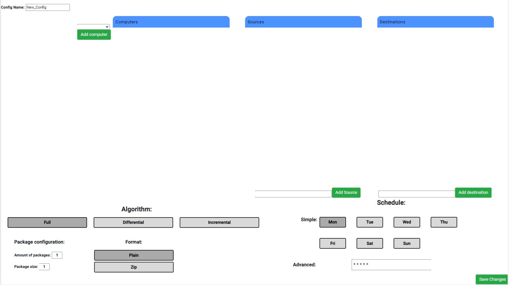
V tomto projektu jsme pracovali ve tříčlenných skupinách. Smyslem
projektu bylo vytvořit program pro zálohu dat dle určitého rozvrhu
a nastavení. Každý člověk z týmu měl na starosti určitou část
aplikace a zároveň trochu pomáhal zbytku týmu s jejich prací. Já
jsem se podílel na všech třech částech projektu nejvíce.
Tato aplikace se skládala z API, Daemona a Administrátorského
rozhraní. Nejprve jsme ale museli navrhnout vzhled stránky přes
Figmu a databázi přes dbDiagram.io. API fungoval jako
zprostředkovatel pro komunikaci mezi Daemonem, Administrátorem a
databází.
Samotný Daemon běžel na počítačích a kontroloval, zda má zálohovat
data. Jeho struktura vypadala takto: obsahoval třídu Core, která
kontrolovala, zda je počítač evidován, zda musí probíhat záloha a
pokud ano, tak kdy musí proběhnout. Navíc obsahoval třídu
Backuper, který se staral o samotnou zálohu. Ten na základě předem
daného nastavení vybíral vhodný způsob zálohy.
Administrátor bylo webové prostředí pro správu záloh, které bylo
napsáno v Angularu. Administrátor obsahoval přehled všech
počítačů, které měly provádět zálohu. Také se mohly vytvářet
skupiny počítačů a administrátorské účty. Kromě toho se mohly
vytvářet configy, ve kterých byl určen čas zálohy, typ zálohy,
místo zálohy, zda se soubory mají komprimovat a také pro jaké
počítače tento config platí.
Na tvorbě webového prostředí jsem se podílel nejméně z týmu (i
přes to vypadá tragicky), jelikož nás už tlačil čas a můj tým to
nestíhal, tak jsem se tento jazyk musel naučit během týdne. Můžu
ale říct, že Typescript doposud moc neumím.
Všechny tyto části programu musely být pro běh aplikace spuštěny
(vše běželo na localhostu – nebyl k tomu přístup z vně a nebylo to
dostupné 24/7). Účelem tohoto projektu bylo naučit se, jak mezi
sebou doopravdy komunikují jednotlivé aplikace a naučit se
používat např. CronTab, JSON, Enkrypci… celkem jsme na této práci
strávili kolem dvou a půl měsíců.
Toto byl menší projekt, na který jsme měli dva týdny a dělali jsme
ho ve WindowsForms. Mohli jsme si vybrat, zda data budeme ukládat
do textového souboru nebo do databáze - já si zvolil databázi.
V prvním týdnu jsme měli za úkol realizovat manipulaci se třídami
(rámečky). V druhém týdnu práce nad projektem jsme si mohli
vybrat, jeslti realizujeme zoomování, pohybování se SS a ukládání
obrázků, nebo jestli vytvoříme šipky, které by ukazovaly na jiné
třídy - reprezentovaly by Objektovou strukturu. Z očividných
důvodů jsem si vybral první variantu.
K vykreslení každé třídy se používá nástroj PictureBox - právě
přes něj probíhá i manipulace se SS, polohou tříd a také jejich
šířkou a výškou. Úprava samotných tříd se provádí přes nové okno s
nástrojem DataGridView a tlačítky - pro přidání nových
atributů/metod se otevírá menší podokno s TextBox a ListBox. Pokud
jde o NOVÉ metody, tak jim nejdou přidat parametry, dokud nebudou
uloženy.
Podrobnější funkcionalitu můžete shlédnout ve videoukázce:
Tento projekt nám nezadávali ve škole, ale napadl mě samotného. Je
to obyčejný úkolníček do kterého si můžeme vytvářet úkoly na další
dny. Naprogramoval jsem to přes Windows Forms.
V levé části hlavního okna se nachází dny od roku 2004 do 2104 a v
pravé části se zobrazují úkoly pro vybraný den. Také se nad
výběrem datumu nachází streak counter, který počítá, kolik dní v
kuse jsme plnily všechny úkoly na den.
Při výběru dne ho můžeme také editovat. Zobrazí se nám nové okno,
ve kterém je vidět přehled všech úkolů na daný den. Pokud je den z
minulosti nebo ze dneška, tak můžeme pouze prohlížet úkoly a měnit
na kolik procent jsou splněny. Pokud je den z budoucna, můžeme
přidávat mazat i editovat nové úkoly.
Při tvorbě/editaci úkolu zadáváme jeho název, popisek, vyhrazený
čas, zda je důležitý nebo volitelný a také na kolik čtvrtin je
splněn. Poté při vytvoření úkolu se v pravém krajním sloupečku
vytvoří tlačítko start. Po stisknutí tohoto tlačítka se nám spustí
časovač, abychom věděli, kolik času dané úloze ještě musíme
věnovat. V uplynulých dnech toto tlačítko není, pouze se nám
ukazuje, kolik minut jsme nad touto úlohou strávili.
Všechny data a změny se ukládají do dvou souborů do složky AppData
ve formátu JSON. Touto úlohou jsem si chtěl procvičit práci ve
Windows Forms a naučit se nové funkce s DataGridView.
Podrobnější funkcionalitu můžete shlédnout ve videoukázce:
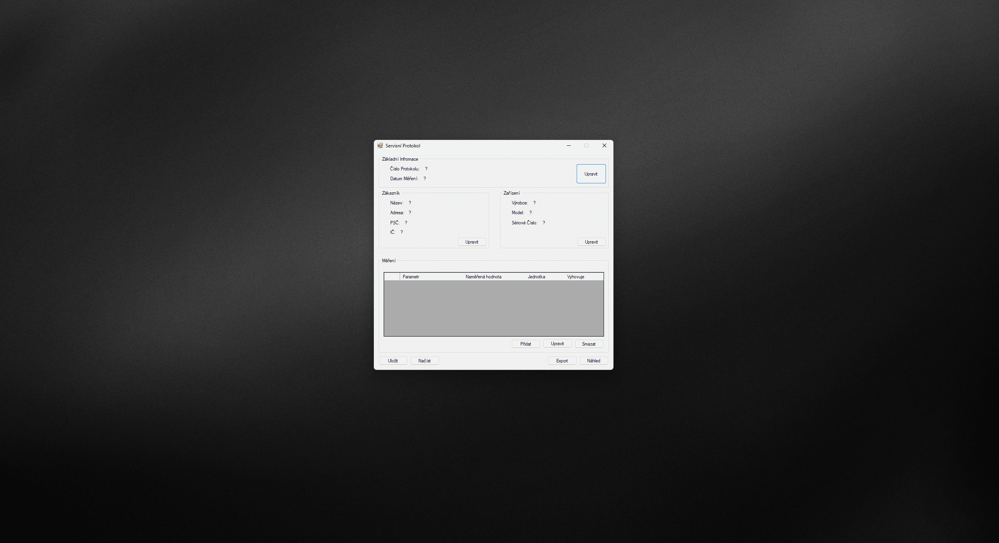
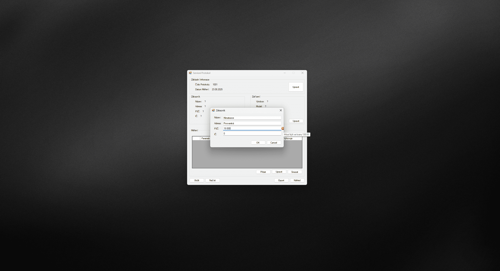
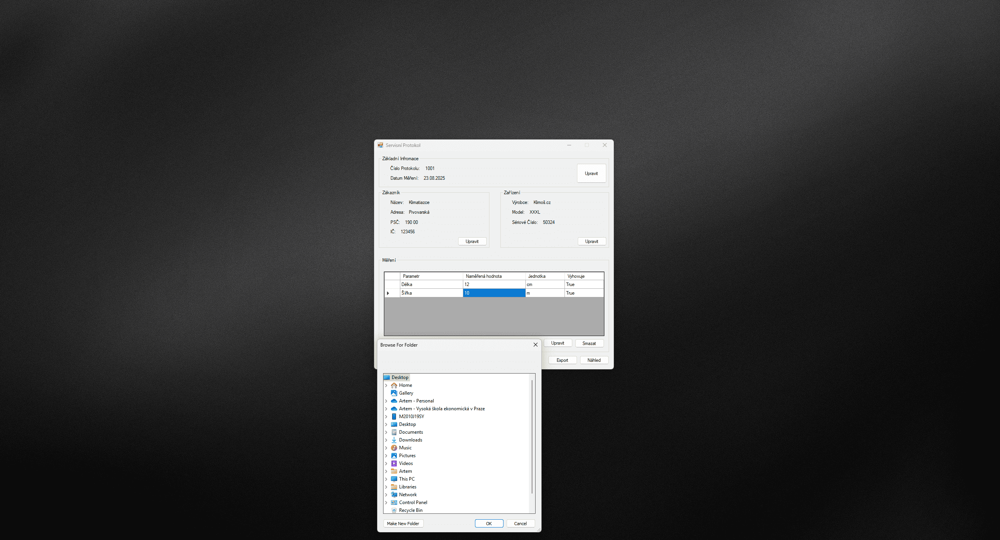
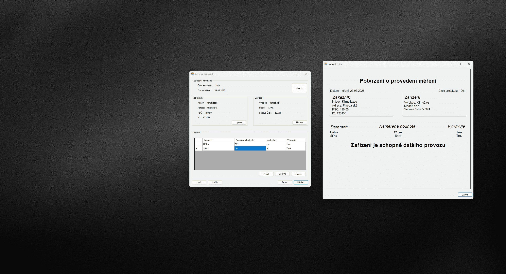
Jednalo se o volitelný mini projekt/domácí úkol, který nám zadával
učitel na programování jako příprava na praktickou maturitní
zkoušku (kdybychom si vytáhli Windows Forms).
V rámci zadání jsme měli vytvořit program pro tvorbu servisního
protokolu (revizní zprávy), který bude mít zjednodušené atributy.
Program musel podporovat Tiskový náhled přes GDI
grafiku (musel se měnit dle velikosti okna),
Editaci polí protokolu,
Validaci hodnot kde některá pole měla specifická
kritéria, Export do HTML pomocí návrhového vzoru
Decorator, Uložení a načtení vytvořeného
protokolu.
Všechny funkce až na Export do HTML s CSS se mi povedlo
implementovat a za celkem slušnou dobu. Tento projekt považuji za
celkem úspěný, obvzlášť jsem byl hrdý na svůj tiskový náhled.
Hlavně když beru ohled na své tehdejší zkušenosti v
programování... možná ani dnes bych to nenapsal lépe, po té dlouhé
době vyvíjení Frontend aplikací 😄.
Toto byl náš poslední školní projekt z programování a zabral nám kolem dvou měsíců. Za úkol jsme měli vytvořit realitní server. Smyslem bylo vytvořit co nejvíce realistickou napodobeninu skutečné realitní stránky a naučit se s technologií ASP.NET. Stránka obsahovala přehled nabídek, administrátorské prostředí, makléřské prostředí a prostředí pro přihlášené uživatele. Přesnější rozbor stránky:
- Hlavní stránka, na které byl přehled nejnovějších nabídek a filtrace dle kategorií.
- Stránka s nabídkami: zde jsme mohli prohlížet všechny nabídky a filtrovat je.
- Makléřské rozhraní: Stránka na kterou se makléř musel přihlásit aby mohl upravovat své nabídky a také svůj účet. Kromě toho mohl prohlížet poptávky a zprávy od uživatelů.
- Administrátorské rozhraní: V podstatě bylo stejné jako makléřské až na to, že administrátor mohl spravovat ostatní administrátory a makléře.
- Stránka pro uživatele: na této stránce si uživatelé mohli prohlížet své oblíbené nemovitosti a psát si s makléři/administrátory.
Při tvorbě této aplikace jsem využíval různé nástroje, jako
například komponenty, vlastní atributy pro ověření správnosti dat,
vlastní layout atd…
Podrobnější funkcionalitu můžete shlédnout ve videoukázce:

Tento projekt jsme tvořili v rámci předmětu programového vybavení (weby). Byl to náš mini projekt na procvičení formulářů a také stylování stránky. Data se z formuláře nikam neposílají, slouží to pouze pro vizualizaci (tehdy jsme neuměli s JavaScriptem).
Toto byl náš první velký projekt v rámci webů. V něm jsme museli
vytvořit webový úkolníček.
Byla zde stránka s projekty a také s přehledem jednotlivých úkolů.
Každý úkol se vždy vztahoval k určitému projektu. Po odpracování
nějaké doby na úkolu se tento čas přičítal k celkovému času celého
projektu – při smazání/úpravě úkolu se čas na projektu
odečítal/měnil.
Evidovat odpracovaný čas na jednotlivém úkolu jde buďto spuštěním
stopek v pravém horním rohu webu, nebo manuálním vytvořením úkolu.
Tento projekt sloužil k procvičení Java Scriptu a abychom se
naučili pracovat s časem.
Podrobnější funkcionalitu můžete shlédnout ve videoukázce:
Tento projekt byl velkým shrnutím celého roku tvorby webů.
Používali jsme v něm všechny naše dovednosti jak v HTML a CSS tak
i v JS. Kromě toho nás profesor naučil používat NestJS.
Tato webová aplikace měla fungovat jako prohlížeč populárních míst
v českých městech. Měli jsme databázi, která obsahovala města, a
každé město mělo zajímavá místa, restaurace či památky.
Tato místa se mohla přidávat kýmkoli přes prostředí webu. Každé
město i místo mělo svojí fotku a místa měla navíc popisek,
hodnocení a komentáře. Hodnocení bylo nezávislé na komentářích a
nedalo se nijak mazat. Komentáře mohl také zanechávat kdokoli –
při publikaci komentáře se uložil čas, jméno a obsah komentáře.
Všechny záznamy a informace o městech i místech se ukládaly do
databáze prostřednictvím repozitáře v NestJS. Úprava jednotlivých
míst probíhala přes novou stránku, kde se vyplnil formulář s
klíčovými informacemi. Pokud město jíž existovalo, tak se poslal
PUT požadavek, pokud neexistovalo tak POST.
Z Podobné práce jsem dokonce maturoval (bylo to v rámci praktické
maturitní zkoušky, která se skládala ze dvou částí – první den
jsem si vylosoval NestJS, druhý den SQL – Mirroring a
zálohování)
Podrobnější funkcionalitu můžete shlédnout ve videoukázce:
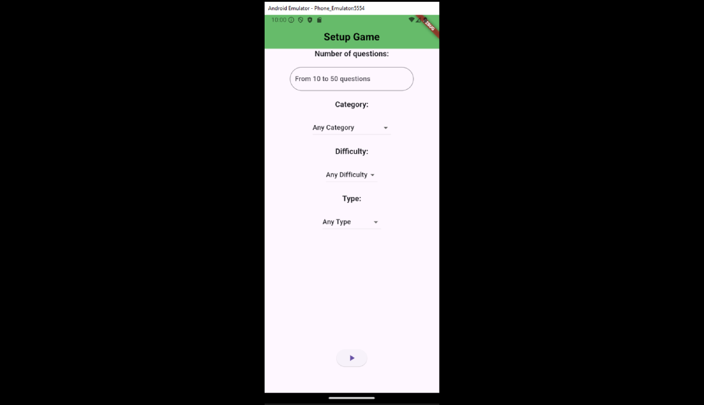
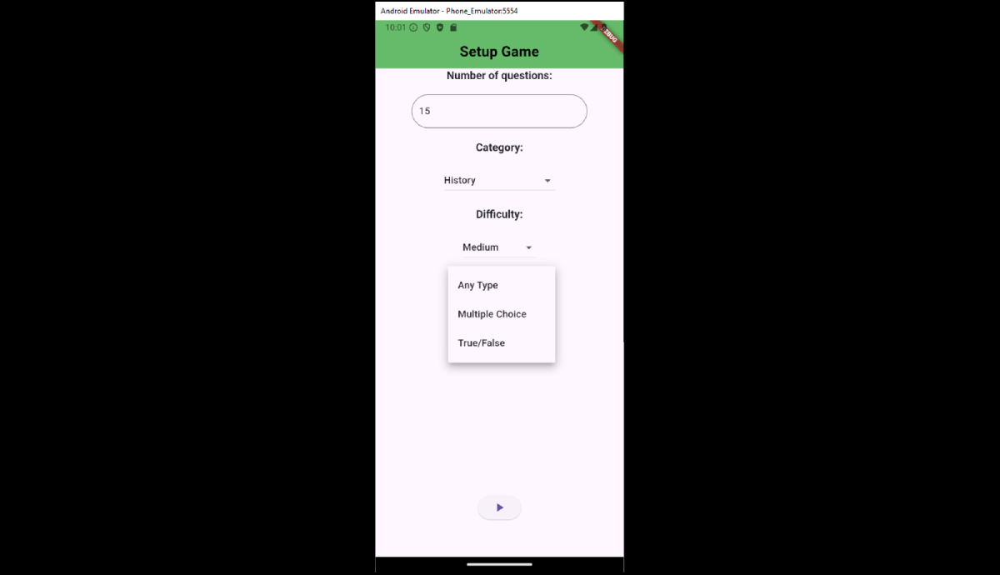
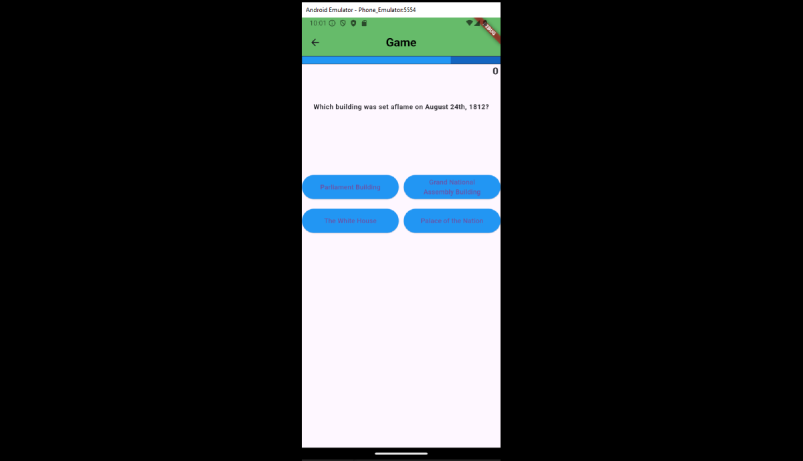
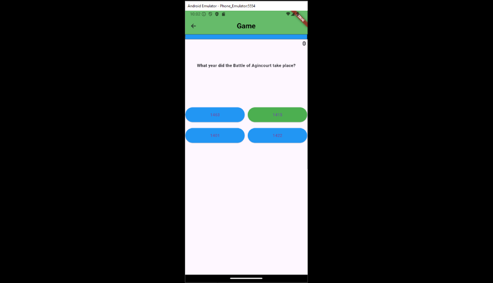
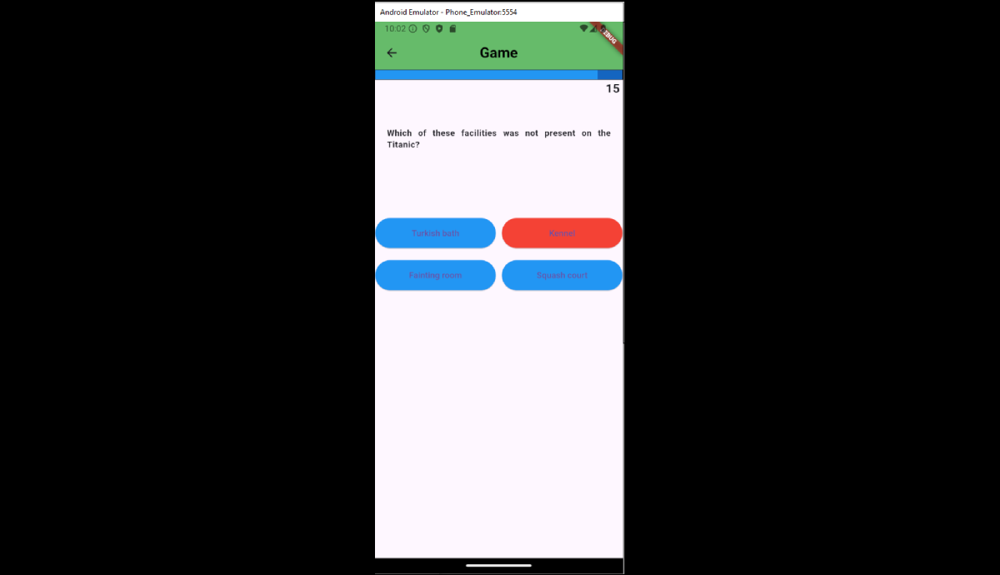
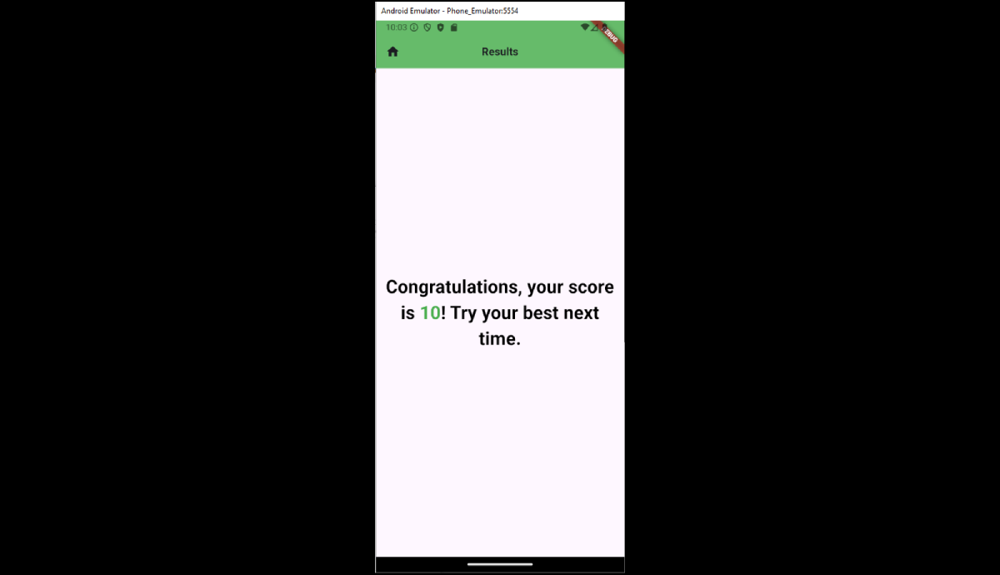
Toto je můj první větší projekt ve frameworku Flutter, který
využívá programovací jazyk Dart.
Pro generaci otázek a odpovědí na ně, jsem využil externí API,
které je určeno pro vzdělávací účely. Můžete ho najít na tomto
odkazu:
Trivia API.
Databáze otázek je veřejně dostupná a kdokoli tam může přidat své
otázky (nutna registrace).
Na hlavní stránce aplikace je formulář, kterým nastavujeme otázky,
které dostaneme. Jak to funguje? Dle výběru uživatele se nastaví
parametry, které se předají k URL cestě a následně se zavolá GET
požadavek na API.
Po spuštění hry, se uživateli budou postupně zobrazovat otázky a
odpovědi na ně (buďto Ano/Ne, nebo výběr z více možností v
závislosti na tom, jak nastavil hru). Na každou odpověď má hráč 20
vteřin - čas se zobrauje v horní části pod AppBarem jako modrý
ProgressBar. Pokud do té doby nestihne odpovědět, tak se zobrazí
další otázka a odečte se 5 bodů. Při výběru špatné odopvědi se
odpověď vybarví červeně a odečte se 5 bodů. Při správné odpovědi
se vybarví zeleně a přičte se 10 bodů.
Po zodpovězení na všechny otázky se zobrazí obrazovka s výsledky.
Z této obrazokvy se hráč může pouze vrátit domů a začít novou hru.
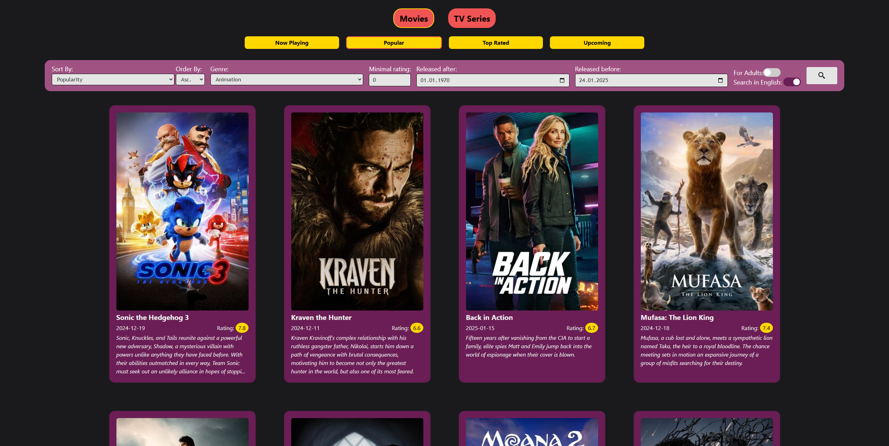
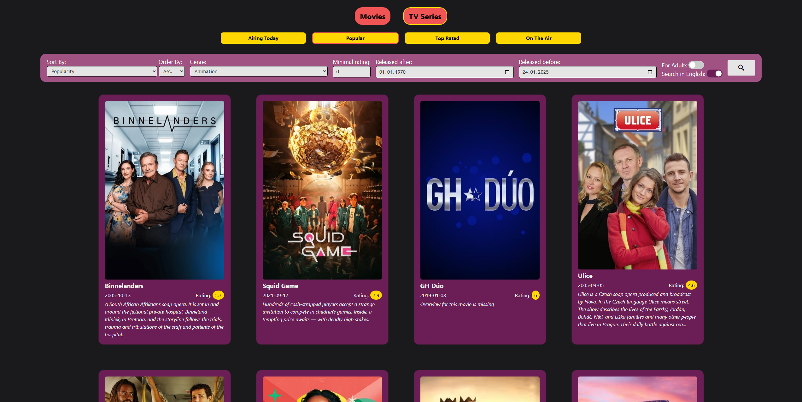
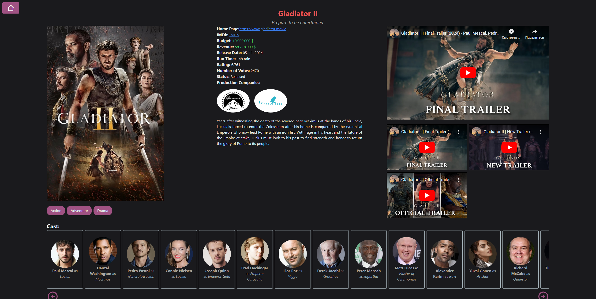
Můj první větší samostatný projekt, který jsem vytvořil s využitím
React. V rámci projektu jsem se snažil aplikovat co nejvíce
znalostí, které jsem získal během absolvování
kurzu. Uvědomuji si, že některá řešení nejsou zcela ideální, například
návrh komponent a jejich vzájemná integrace, avšak si myslím, že
výsledek představuje solidní práci.
Jako zdroj dat jsem využil veřejné API -
TMDB, což je
rozsáhlá databáze filmů, do které mohou uživatelé přidávat obsah.
API nabízí celou řadu filtrů, které jsem ve svém projektu hojně
využil, především pro filtrování na straně klienta.
V rámci projektu jsem implementoval například knihovnu Framer
Motion pro animace, Tanstack Query pro odesílání requestů, Context
API pro efektivní správu uložených filtrů a také TypeScript, abych
se s nim naučil více pracovat.
Aplikace umožňuje uživatelům vybírat různé kategorie filmů či
seriálů. Uživatel si také může nastavit vlastní filtr a vyhledávat
filmy na základě specifických kritérií. Myšlenka projektu byla
vytvořit nástroj, který by uživatelům pomohl najít inspiraci, když
nevědí, na co se podívat. Po nalezení zajímavého filmu si v
detailu mohou přečíst stručný popisek (bohužel API poskytuje pouze
omezené informace) a přehrát dostupné trailery. Pokud by je film
zaujal, mohou si ho pustit na Netflix nebo jiné streamovací
platformě.
Aplikaci si můžete vyzkoušet na následujícím odkazu (pokud stále
ještě nebyl překročen datový limit hostingu😃):
filmsdb.zakharchenkoartem.cz/
Tento projekt jsem zakládal s účelem opět si procvičit React a
hlavně prohloubit své znalosti ze Spring Boot
kurzu. Největším problémem zde bylo implementovat autentizaci pomocí
JWT tokenu, jelikož jsem Spring Security neprobíral tolik do
hloubky. Také bylo občas problematické zorientovat se ve verzích
Spring knihoven, ale s AI se to nějak zvládlo.
Také jsem si v rámci tohoto projektu chtěl osvojit Kafkru, Redis a
Docker. Bohužel nervy mi stačily jen na Docker - chtěl jsem si
trochu užít i letní prázdniny, jelikož jsem do toho pracoval.
Pokud na to ale v budoucnu bude čas, tak se plánuji k projektu
vrátit a doimplementovat aspoň Redis.
Jinak frontend se mi povedl celkem hezky. Pár drobností na
vylepšení tam rozhodně je - např. některé UX prvky nemusí být
uživatelům hned jasné. Nejvíc ale aplikaci chybí responzivita. Tu
jsem se rozhodl nakonec nedělat, jelikož vím, že responzivitu
umím, jen by mě to zbytečně okrádalo o čas. Tady šlo o to, spojit
všechny své znalosti a vytvořit Fullstack aplikaci. Pokud Vám
nestačí videoukázka, neváhejte, a zkuste si aplikaci přes Docker
dle návodu v README.md na mém
GitHub.
Celkově ale mám z tohoto projektu dobrý pocit. Konečně jsem se po
delší době věnoval i backendu a musel jsem řešit některé
problematické funkce aplikace (připomínky, opakující se eventy).
Samozřejmě neobešlo se bez pomoci AI a v průběhu jsem si uvědomil,
že by se některé věci mohly navrhnout o něco lépe. Aspoň teď mám
díky tomu větší zkušenost a přehled, jak by se mělo pracovat s
takovým typem aplikací.